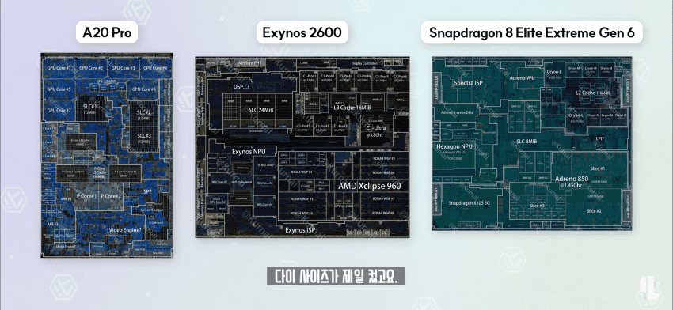
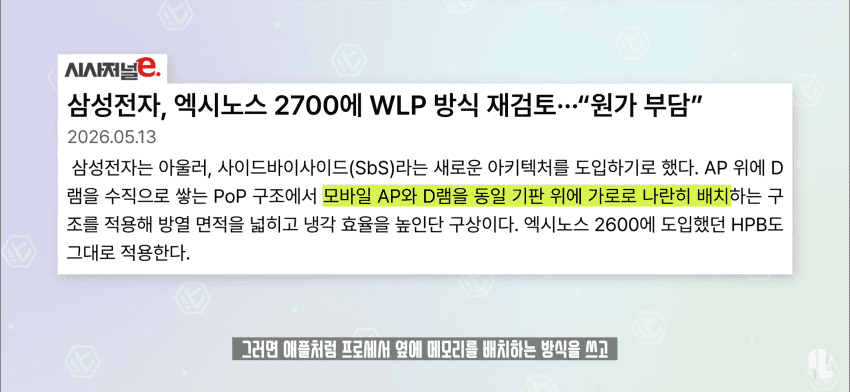
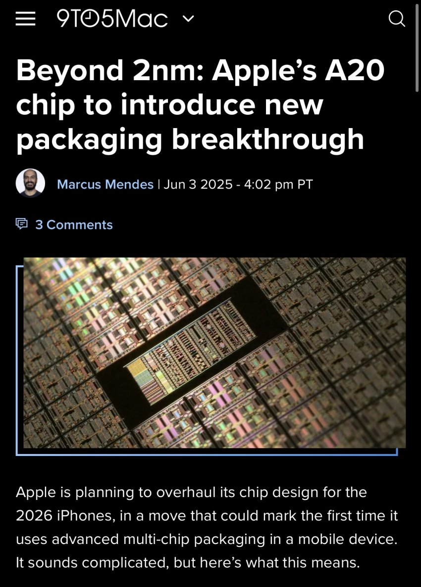

크기는 가장 크고

갑자기 우연히도 이번 엑시2700에서 애플과 유사한 메모리 배치

이미 작년 6월에 애플의 새로운 d램 배치기사가 났음..
음..
폴드 비율도 파쿠리하고
칩설계방식도 흘깃하고
고객과 누구보다도 치열하게 경쟁하려하니
애플이 칩 제조를 삼성이 안 맡기지..

크기는 가장 크고

갑자기 우연히도 이번 엑시2700에서 애플과 유사한 메모리 배치

이미 작년 6월에 애플의 새로운 d램 배치기사가 났음..
음..
폴드 비율도 파쿠리하고
칩설계방식도 흘깃하고
고객과 누구보다도 치열하게 경쟁하려하니
애플이 칩 제조를 삼성이 안 맡기지..
댓글
수집 당시 댓글 172개
ㅇㅇ · 11.24 10:18:19
· ㅇㅇ · 11.24 10:18:32
· ㅇㅇ · 11.24 10:18:44
· ㅇㅇ · 11.24 10:21:24
· ㅇㅇ · 11.24 10:21:40
· ㅇㅇ · 11.24 10:23:08
· ㅇㅇ · 11.24 10:23:32
· ㅇㅇ · 11.24 10:23:44
· ㅇㅇ · 11.24 10:23:56
· ㅁㅁㅁ · 11.24 14:56:35
· ㅇㅇ · 11.24 16:47:47
· ㅇㅇ · 11.24 17:40:48
ㅇㅇ · 11.24 10:21:04
ㅇㅇ · 11.24 10:21:06
ㅇㅇ · 11.24 10:22:36
· ㅇㅇ · 11.24 10:23:12
ㅇㅇ · 11.24 10:24:03
ㅇㅇ · 11.24 10:24:09
ㅇㅇ · 11.24 10:27:54
해갤러 · 11.24 10:28:05
ㅇㅇ · 11.24 10:31:03
ㅇㅇ · 11.24 10:32:19
ㅇㅇ · 11.24 10:33:58
· Vegetable40k · 11.24 10:37:40
· 겐쉰프 · 11.24 14:08:26
· 겐쉰프 · 11.24 14:08:45
ㅇㅇ · 11.24 10:35:19
ㅇㅇ · 11.24 10:36:38
ㅇㅇ · 11.24 10:40:35
ㅇㅇ · 11.24 10:44:35
ㅇㅇ · 11.24 10:50:39
ㅇㅇ · 11.24 10:55:53
ㅇㅇ · 11.24 10:56:57
· ㅇㅇ · 11.24 11:00:53
· ㅇㅇ · 11.24 11:04:19
· ㅇㅇ · 11.24 11:05:23
· ㅇㅇ · 11.24 11:07:07
· ㅇㅇ · 11.24 13:36:03
· ㅇㅇ · 11.24 14:19:54
· ㅇㅇ · 11.24 15:11:04
· ㅇㅇ · 11.24 17:48:29
ㅇㅇ · 11.24 11:15:21
히이잉 · 11.24 11:15:37
ㅇㅇ · 11.24 11:18:51
+_ · 11.24 11:31:40
ㅇㅇ · 11.24 11:36:33
· ㅇㅇ · 11.24 11:37:05
· ㅇㅇ · 11.24 12:00:19
· ㅇㅇ · 11.24 14:21:23
ㅇㅇ · 11.24 11:36:47
ㅇㅇ · 11.24 11:39:45
ㅇㅇ · 11.24 11:49:57
ㅇㅇ · 11.24 12:10:01
ㅇㅇ · 11.24 12:23:46
· 겐쉰프 · 11.24 14:07:30
· ㅇㅇ · 11.24 14:15:28
· ㅇㅇ · 11.24 14:17:27
· ㅇㅇ · 11.24 14:34:11
ㅇㅇ · 11.24 12:27:46
ㅇㅇ · 11.24 12:54:49
ㅇㅇ · 11.24 13:09:40
ㅇㅇ · 11.24 13:12:48
ㅇㅇ · 11.24 13:20:25
· ㅇㅇ · 11.24 13:21:26
ㅇㅇ · 11.24 13:25:17
으라차차차차 · 11.24 13:28:14
ㅇㅇ · 11.24 13:31:52
ㅇㅇ · 11.24 13:50:51
ㅇㅇ · 11.24 13:59:59
· ㅇㅇ · 11.24 14:18:09
· 겐쉰프 · 11.24 14:34:52
· 겐쉰프 · 11.24 14:43:58
ㅇㅇ · 11.24 14:34:39
ㅇㅇ · 11.24 14:54:53
ㅇㅇ · 11.24 14:57:53
ㅇㅇ · 11.24 14:59:52
· 겐쉰프 · 11.24 16:00:45
· 겐쉰프 · 11.24 16:01:03
· 겐쉰프 · 11.24 16:01:16
ㅇㅇ · 11.24 15:35:41
ㅇㅇ · 11.24 15:43:58
· 겐쉰프 · 11.24 15:59:19
· 겐쉰프 · 11.24 15:59:51
· 겐쉰프 · 11.24 16:00:07
· ㅇㅇ · 11.24 16:55:51
· ㅇㅇ · 11.24 18:15:39
ㅇㅇ · 11.24 16:28:22
ㅇㅇ · 11.24 17:12:38
<:)~ · 11.24 17:50:24
ㅇㅇ · 11.24 18:29:29
ㅇㅇ · 11.24 19:13:53
ㅇㅇ · 11.24 19:41:17
ㅇㅇ · 11.24 20:09:48
ㅇㅇ · 11.24 20:15:47
ㅇㅇ · 11.24 20:17:08
ㅇㅇ · 11.24 20:35:58
ㅇㅇ · 11.24 21:21:36
ㅇㅇ · 11.24 21:35:08
ㅇㅇ · 11.24 21:51:47
· ㅇㅇ · 11.24 21:54:26
맛갤러1 · 11.23 20:49:48
· ㅇㅇ · 11.24 10:17:11
· dd · 11.24 10:19:33
· ㅇㅇ · 11.24 10:23:56
· ㅇㅇ · 11.24 10:25:54
· ㅇㅇ · 11.24 10:26:40
· ㅇㅇ · 11.24 11:02:31
· ㅇㅇ · 11.24 11:16:28
· ㅇㅇ · 11.24 11:23:29
· 겐쉰프 · 11.24 14:04:49
· 겐쉰프 · 11.24 14:46:23
· 겐쉰프 · 11.24 14:46:59
또람퓨 · 11.23 20:51:12
· ㅇㅇ · 11.24 10:46:50
ㅇㅇ · 11.24 10:07:40
· ㅇㅇ · 11.24 10:07:51
msnr · 11.24 10:08:29
· ㅇㅇ · 11.24 10:45:38
· ㅇㅇ · 11.24 12:52:42
ㅇㅇ · 11.24 10:09:29
· ㅇㅇ · 11.24 10:23:06
· ㅇㅇ · 11.24 11:36:51
· ㅇㅇ · 11.24 11:57:06
· 겐쉰프 · 11.24 13:59:37
· 겐쉰프 · 11.24 14:00:03
ㅇㅇ · 11.24 10:10:09
ㅇㅇ · 11.24 10:10:11
· ㅇㅇ · 11.24 10:12:37
· ㅇㅇ · 11.24 11:31:12
· 겐쉰프 · 11.24 13:58:21
· 겐쉰프 · 11.24 13:59:02
이오시프스탈린 · 11.24 10:10:50
· Vegetable40k · 11.24 10:15:04
· 이오시프스탈린 · 11.24 10:15:39
· ㅇㅇㅇㅇ · 11.24 10:23:32
· ㅇㅇ · 11.24 10:26:27
· ㅇㅇ · 11.24 10:47:58
· ㅇㅇ · 11.24 11:58:22
· ㅇㅇ · 11.24 12:53:55
ㅇㅇ · 11.24 10:11:02
ㅇㅇ · 11.24 10:11:37
· ㅇㅇ · 11.24 11:11:19
· ㅂㅂ · 11.24 11:21:39
ㅇㅇ · 11.24 10:11:45
삭제됨 · 11.24 10:12:26
· ㅇㅇ · 11.24 10:26:46
ㅇㅇ · 11.24 10:13:30
· 네요 · 11.24 10:14:19
네요 · 11.24 10:13:55
히이잉 · 11.24 10:14:28
ㅇㅇ · 11.24 10:16:31
· ㅇㅇ · 11.24 10:17:49
· Zzz · 11.24 11:30:22
· ㅇㅇ · 11.24 11:42:07
· 겐쉰프 · 11.24 13:56:57
· ㅇㅇ · 11.24 14:32:46
· ㅇㅇ · 11.24 16:09:14
· 겐쉰프 · 11.24 16:20:34
· ㅇㅇ · 11.24 16:21:56
· 겐쉰프 · 11.24 16:22:29
· 겐쉰프 · 11.24 16:23:28
· ㅇㅇ · 11.24 16:24:02
· ㅇㅇ · 11.24 16:25:46
· ㅇㅇ · 11.24 16:32:29
· 겐쉰프 · 11.24 16:33:15
· 겐쉰프 · 11.24 16:34:00
· ㅇㅇ · 11.24 16:35:47
· 겐쉰프 · 11.24 16:36:22
· ㅇㅇ · 11.24 16:39:31
ㅋㅋ · 11.24 10:17:00
· ㅇㅇ · 11.24 10:21:28
ㅇㅇ · 11.24 10:17:19